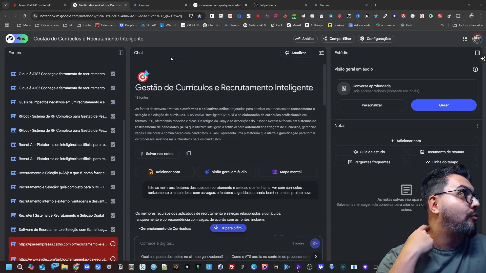
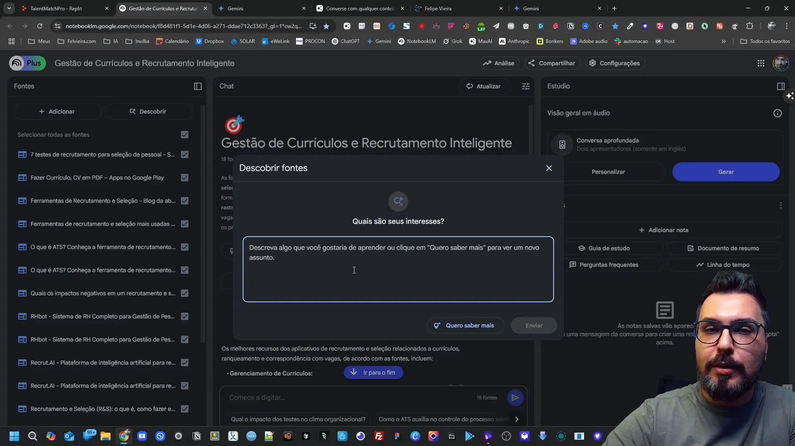
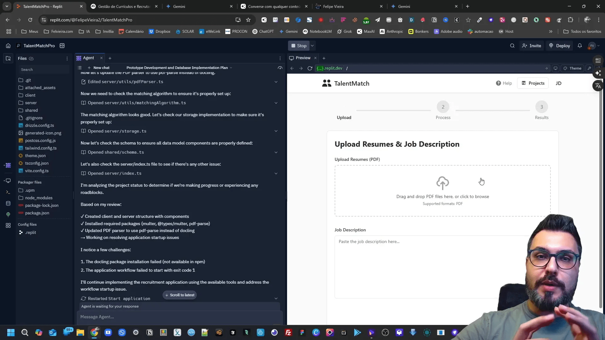
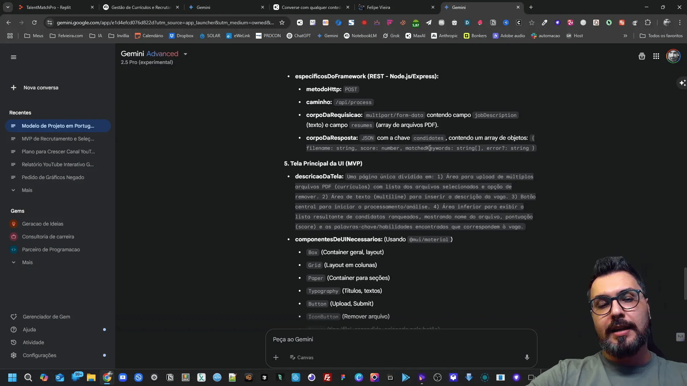

Se você está buscando maneiras de inovar e desenvolver produtos que realmente agreguem valor ao mercado, você está no lugar certo! Neste artigo, vamos explorar como utilizar a inteligência artificial e plataformas de low code para criar aplicativos incríveis em apenas 15 minutos. Sou Felipe DEV, com mais de 16 anos de experiência na área de desenvolvimento, e hoje vou compartilhar dicas práticas que podem transformar suas ideias em realidade.
Índice
- 🚀 Introdução ao Desenvolvimento de Produtos com IA
- 💡 Ciclo de Vida de Produto e Validação de Ideias
- 🔍 Pesquisa de Mercado com Google Colab e Gemini
- 🛠️ Prompt Estruturado para Definição de Projetos
- 💻 Criando um MVP com Repl.it (Demonstração Prática)
- 📊 Produto Final e Estratégias de Monetização
- 🔚 Conclusão e Comparação entre Plataformas
- ❓ FAQ
🚀 Introdução ao Desenvolvimento de Produtos com IA
O desenvolvimento de produtos é um processo que envolve várias etapas, desde a concepção da ideia até a entrega do produto final ao consumidor. Com o advento da inteligência artificial (IA) e das plataformas de low code, esse processo se tornou mais acessível e eficiente. A IA pode ajudar a otimizar a pesquisa de mercado, a definição de características do produto e até mesmo a construção do MVP (Produto Mínimo Viável).
💡 Ciclo de Vida de Produto e Validação de Ideias
Antes de mergulhar na construção de um aplicativo, é essencial entender o ciclo de vida do produto. O ciclo de vida inclui as seguintes etapas:
- Concepção da Ideia
- Pesquisa de Mercado
- Desenvolvimento do Produto
- Teste e Validação
- Comercialização
Um dos erros mais comuns é avançar para o desenvolvimento sem validar a ideia. Isso pode resultar em desperdício de tempo e recursos. A validação pode ser feita por meio de pesquisas de mercado, onde você analisa se já existem soluções similares e quais são as reclamações dos usuários em relação a esses produtos.

🔍 Pesquisa de Mercado com Google Colab e Gemini
Para facilitar a pesquisa de mercado, eu recomendo o uso do Google Colab e do Gemini. Essas ferramentas permitem coletar dados de forma rápida e eficiente. Você pode usar o Google Colab para criar scripts que automatizam a coleta de informações sobre concorrentes e funcionalidades desejadas pelos usuários.
Ao pesquisar, pergunte-se:
- O que já existe no mercado?
- Quais são as funcionalidades que os usuários gostariam de ver?
- Como meu produto pode se diferenciar?

🛠️ Prompt Estruturado para Definição de Projetos
Um prompt bem estruturado é fundamental para guiar o desenvolvimento do seu projeto. Ao definir um MVP, considere as funcionalidades essenciais que seu aplicativo deve ter. Um bom ponto de partida é listar as características que os concorrentes oferecem e, em seguida, identificar o que está faltando.
Essas informações podem ser organizadas em um formato que facilite a comunicação com sua equipe de desenvolvimento ou com ferramentas de IA, como o Gemini. Você pode usar prompts para gerar uma lista de funcionalidades e até mesmo um esboço do design do aplicativo.

💻 Criando um MVP com Repl.it (Demonstração Prática)
Uma vez que você tenha todas as informações necessárias, é hora de construir seu MVP. Para isso, eu gosto de usar o Repl.it, uma plataforma que permite desenvolver aplicativos sem a necessidade de configurar um ambiente de desenvolvimento complexo.
Ao criar seu MVP, concentre-se nas funcionalidades que realmente importam. O objetivo é ter um produto funcional que você possa apresentar aos usuários e coletar feedback. Aqui estão algumas dicas para construir seu MVP:
- Escolha uma ou duas funcionalidades chave.
- Utilize um design simples e intuitivo.
- Implemente um sistema de feedback para entender como os usuários interagem com seu produto.

📊 Produto Final e Estratégias de Monetização
Após testar seu MVP e coletar feedback, é hora de pensar em monetização. Existem várias estratégias que você pode adotar, como:
Turbine seu Desenvolvimento com Prompts!
Você já sonhou em criar seu próprio aplicativo mas pensou que precisaria ser um gênio da programação? Chegou a hora de transformar esse sonho em realidade! Com as ferramentas no-code de hoje, você pode criar aplicativos profissionais sem escrever uma única linha de código.
- Modelo de assinatura mensal
- Venda de créditos para consultas ou serviços premium
- Publicidade dentro do aplicativo
É importante realizar uma pesquisa de mercado para entender qual modelo se adequa melhor ao seu público-alvo. O preço deve ser competitivo, mas também deve garantir que você consiga cobrir seus custos e ter lucro.
🔚 Conclusão e Comparação entre Plataformas
Ao longo deste artigo, discutimos como utilizar a inteligência artificial e plataformas de low code para desenvolver aplicativos rapidamente. O uso de ferramentas como Google Colab, Gemini, e Repl.it pode facilitar muito o processo. Lembre-se de sempre validar suas ideias e coletar feedback dos usuários.
Se você está pensando em iniciar sua jornada no desenvolvimento de produtos, comece com um MVP e não tenha medo de iterar. A inovação está em resolver problemas de forma eficiente, utilizando as ferramentas que temos à disposição.
❓ FAQ
Qual a importância de validar uma ideia antes do desenvolvimento?
A validação é crucial para evitar desperdício de recursos. Ela garante que você está construindo algo que realmente atende a uma necessidade do mercado.
Quais ferramentas posso usar para desenvolver meu MVP?
Você pode usar ferramentas como Repl.it, Google Colab, e Gemini para facilitar o desenvolvimento e a pesquisa de mercado.
Como posso monetizar meu aplicativo?
Existem várias estratégias de monetização, incluindo modelos de assinatura, venda de créditos, e publicidade.
O que é um MVP?
O MVP, ou Produto Mínimo Viável, é uma versão simplificada do seu produto que contém apenas as funcionalidades essenciais para atender às necessidades dos usuários.
Posso desenvolver aplicativos sem saber programar?
Sim! Com as ferramentas de low code e inteligência artificial, é possível desenvolver aplicativos sem a necessidade de conhecimentos avançados em programação.
Espero que este artigo tenha sido útil e que você se sinta inspirado a começar seu próprio projeto. Lembre-se, o importante é dar o primeiro passo e não parar de aprender!
Este artigo é baseado no meu video CRIE APPS QUE VENDEM em 15 MINUTOS usando IA (sem código) | Método completo para MVPs pra mais detalhes vejam direto no youtube.